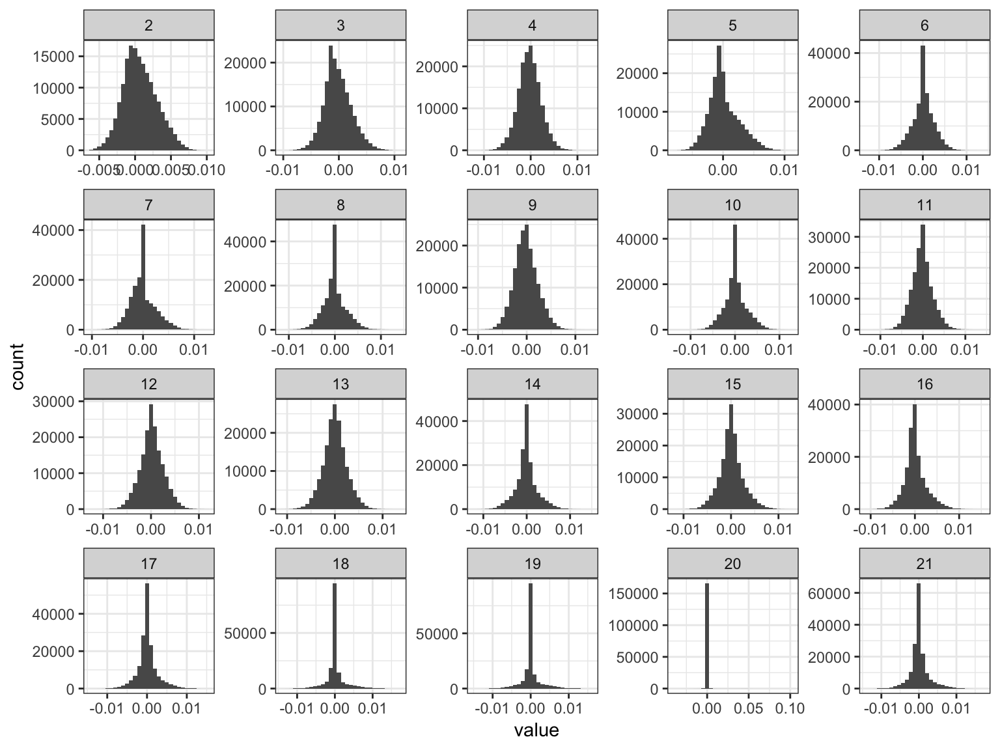
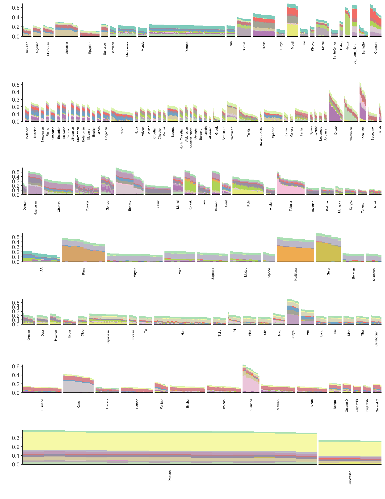

Last updated: 2019-02-15
workflowr checks: (Click a bullet for more information) ✖ R Markdown file: uncommitted changes
The R Markdown file has unstaged changes. To know which version of the R Markdown file created these results, you’ll want to first commit it to the Git repo. If you’re still working on the analysis, you can ignore this warning. When you’re finished, you can run wflow_publish to commit the R Markdown file and build the HTML.
✔ Environment: empty
Great job! The global environment was empty. Objects defined in the global environment can affect the analysis in your R Markdown file in unknown ways. For reproduciblity it’s best to always run the code in an empty environment.
✔ Seed:
set.seed(20190211)
The command set.seed(20190211) was run prior to running the code in the R Markdown file. Setting a seed ensures that any results that rely on randomness, e.g. subsampling or permutations, are reproducible.
✔ Session information: recorded
Great job! Recording the operating system, R version, and package versions is critical for reproducibility.
✔ Repository version: 1fc0c94
wflow_publish or wflow_git_commit). workflowr only checks the R Markdown file, but you know if there are other scripts or data files that it depends on. Below is the status of the Git repository when the results were generated:
Ignored files:
Ignored: .Rhistory
Ignored: Makefile
Ignored: analysis/flash_cache/
Ignored: data/.DS_Store
Ignored: data/raw/
Ignored: output/admixture/
Ignored: output/flash_backfit/
Ignored: output/flash_greedy/
Ignored: output/softImpute/
Untracked files:
Untracked: analysis/hoa_weurasia.Rmd
Untracked: code/viz.R
Untracked: docs/figure/hoa_weurasia.Rmd/
Unstaged changes:
Modified: analysis/flash.Rmd
Modified: analysis/hoa_global.Rmd
Modified: analysis/index.Rmd
Modified: data/meta/HumanOriginsPublic2068_weurasia_maf_geno.meta
Modified: data/meta/HumanOriginsPublic2068_weurasia_maf_geno_ldprune.meta
| File | Version | Author | Date | Message |
|---|---|---|---|---|
| Rmd | 4afc77e | jhmarcus | 2019-02-15 | init hoa global analysis |
Lets import some needed packages
library(ggplot2)
library(tidyr)
library(dplyr)
library(RColorBrewer)
source("../code/viz.R")
# this is the color palette we will use over and over
getPalette = colorRampPalette(brewer.pal(12, "Set3"))This is the full Human Origins dataset 2068 sampled from around the world. I filtered out rare variants with global minor allele frequency less than 5%, and remove any variants with a missingness level greater than 1%. I then LD pruned the SNPs using standard parameters in plink, resulting in 167178 SNPs.
Lets first read the greedy flashier fit
flash_fit = readRDS("../output/flash_greedy/hoa_global_ld/HumanOriginsPublic2068_maf_geno_ldprune.rds")
K = ncol(flash_fit$loadings$normalized.loadings[[1]])
n = nrow(flash_fit$loadings$normalized.loadings[[1]])
p = nrow(flash_fit$loadings$normalized.loadings[[2]])
print(K)[1] 31print(n)[1] 2068print(p)[1] 167178Lets now plot the distribution of factors for each drift event
# read factors
delta_df = as.data.frame(flash_fit$loadings$normalized.loadings[[2]])
colnames(delta_df)[1:K] = 1:K
# gather the data.frame for plotting
delta_gath_df = delta_df %>%
gather(K, value) %>%
filter(K!=1)
# plot the factors
K_ = K
p_fct = ggplot(delta_gath_df, aes(x=value, fill=factor(K, 2:K_))) +
scale_fill_manual(values = getPalette(K_)) +
geom_histogram() +
facet_wrap(~factor(K, levels=2:K_), scales = "free") +
labs(fill="K") +
scale_x_continuous(breaks = scales::pretty_breaks(n = 3)) +
scale_y_continuous(breaks = scales::pretty_breaks(n = 3)) +
theme_bw()
p_fct
We can see the later factors tend to get sparser but they still seem to contribute! Lets now take a look at the loadings:
############### data ###############
# read the meta data
meta_df = read.table("../data/meta/HumanOriginsPublic2068_maf_geno_ldprune.meta", sep=" ", header=T)
# setup loadings data.frame
l_df = as.data.frame(flash_fit$loadings$normalized.loadings[[1]])
l_df$iid = as.vector(meta_df$iid) # individual ids
l_df$clst = meta_df$clst # population labels
# join with the meta data
l_df = l_df %>% inner_join(meta_df, on="clst")
l_df = l_df %>% arrange(region, clst) # sort by region then by population
l_df$iid = factor(l_df$iid, levels = l_df$iid) # make sure the ids are sorted
colnames(l_df)[1:K] = 1:K
# gather the data.frame for plotting
l_gath_df = l_df %>%
gather(K, value, -iid, -clst, -region, -country, -lat, -lon, -clst2) %>%
filter(K!=1)
############### viz ###############
pops = unique(l_df$clst)
# Africa
africa_pops = get_pops(meta_df, "Africa")
p_africa = positive_structure_plot(l_gath_df %>% filter(region == "Africa"), africa_pops, K, label_size=5)
# America
america_pops = get_pops(meta_df, "America")
p_america = positive_structure_plot(l_gath_df %>% filter(region == "America"), america_pops, K, label_size=5)
# Central Asia Siberia
central_asia_siberia_pops = get_pops(meta_df, "CentralAsiaSiberia")
p_central_asia_siberia = positive_structure_plot(l_gath_df %>% filter(region == "CentralAsiaSiberia"), central_asia_siberia_pops, K, label_size=5)
# East Asia
east_asia_pops = get_pops(meta_df, "EastAsia")
p_east_asia = positive_structure_plot(l_gath_df %>% filter(region == "EastAsia"), east_asia_pops, K, label_size=5)
# South Asia
south_asia_pops = get_pops(meta_df, "SouthAsia")
p_south_asia= positive_structure_plot(l_gath_df %>% filter(region == "SouthAsia"), south_asia_pops, K, label_size=5)
# West Eurasia
west_eurasia_pops = get_pops(meta_df, "WestEurasia")
p_west_eurasia = positive_structure_plot(l_gath_df %>% filter(region == "WestEurasia"), west_eurasia_pops, K, label_size=5)
# Oceania
oceania_pops = get_pops(meta_df, "Oceania")
p_oceania = positive_structure_plot(l_gath_df %>% filter(region == "Oceania"), oceania_pops, K, label_size=5)
p = cowplot::plot_grid(p_africa, p_west_eurasia, p_central_asia_siberia, p_america, p_east_asia, p_south_asia, p_oceania,
rel_heights = c(1.2, 1.3, 1, 1, 1, 1, 1.1),
nrow = 7, align = "v")
p
sessionInfo()R version 3.5.1 (2018-07-02)
Platform: x86_64-apple-darwin13.4.0 (64-bit)
Running under: macOS 10.14.2
Matrix products: default
BLAS/LAPACK: /Users/jhmarcus/miniconda3/lib/R/lib/libRblas.dylib
locale:
[1] en_US.UTF-8/en_US.UTF-8/en_US.UTF-8/C/en_US.UTF-8/en_US.UTF-8
attached base packages:
[1] stats graphics grDevices utils datasets methods base
other attached packages:
[1] bindrcpp_0.2.2 RColorBrewer_1.1-2 dplyr_0.7.6
[4] tidyr_0.8.1 ggplot2_3.0.0
loaded via a namespace (and not attached):
[1] Rcpp_1.0.0 compiler_3.5.1 pillar_1.3.0
[4] git2r_0.23.0 plyr_1.8.4 workflowr_1.1.1
[7] bindr_0.1.1 R.methodsS3_1.7.1 R.utils_2.7.0
[10] tools_3.5.1 digest_0.6.18 evaluate_0.12
[13] tibble_1.4.2 gtable_0.2.0 pkgconfig_2.0.1
[16] rlang_0.3.1 yaml_2.2.0 xfun_0.4
[19] flashier_0.1.0 withr_2.1.2 stringr_1.3.1
[22] knitr_1.21 cowplot_0.9.4 rprojroot_1.3-2
[25] grid_3.5.1 tidyselect_0.2.4 glue_1.3.0
[28] R6_2.3.0 rmarkdown_1.11 reshape2_1.4.3
[31] purrr_0.2.5 magrittr_1.5 whisker_0.3-2
[34] backports_1.1.2 scales_0.5.0 htmltools_0.3.6
[37] assertthat_0.2.0 colorspace_1.3-2 labeling_0.3
[40] stringi_1.2.4 lazyeval_0.2.1 munsell_0.5.0
[43] crayon_1.3.4 R.oo_1.22.0 This reproducible R Markdown analysis was created with workflowr 1.1.1